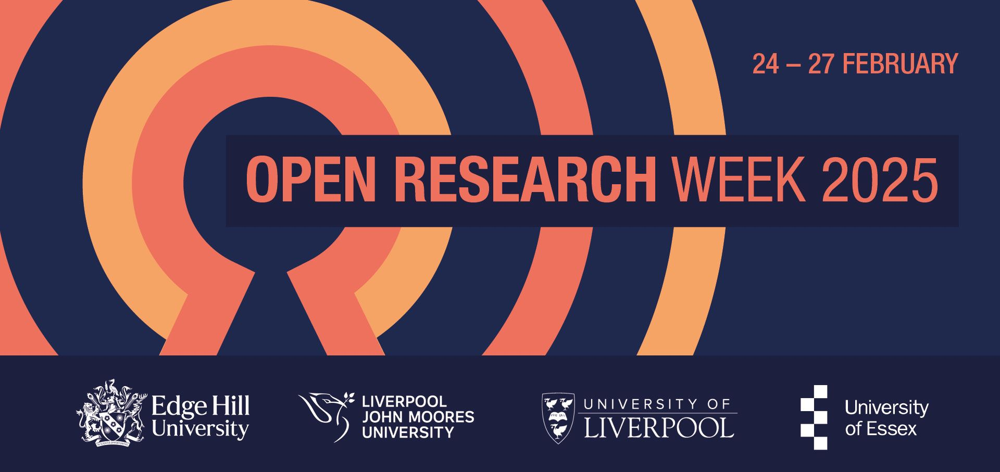

From 24 to 27 February, Open Research Week 2025 will take place through a series of online sessions. Organized by the University of Liverpool, Liverpool John Moores University, Edge Hill University, and the University of Essex, this event will cover a range of topics related to open science.
Aleksandra Lazić, Coordinator at the Open Science Community Serbia, has been invited to deliver the fifth session on February 26 at 11 AM Central European Time: Lessons learned from setting up REPOPSI – supporting open psychology research in Serbia. Find out more about the session and book your place: https://libcal.essex.ac.uk/event/4301322
Some other topics that will be covered include the intersection of open science and AI-based research, rewarding open practices, and open qualitative research.
Attendance is free but registration is required. View the full programme and booking links for all sessions here: https://www.liverpool.ac.uk/open-research/open-research-week-2025/
